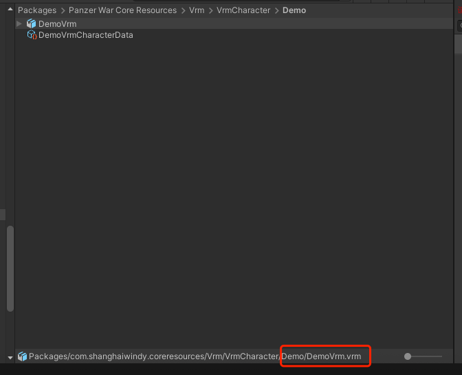
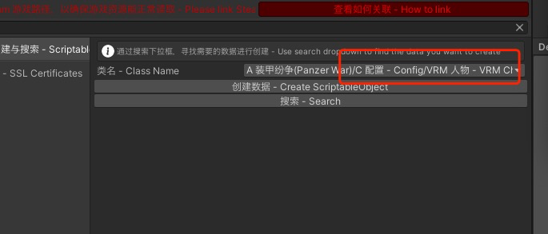
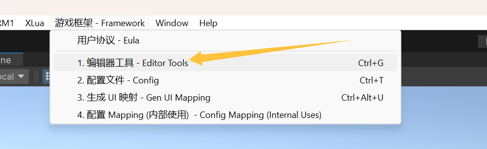
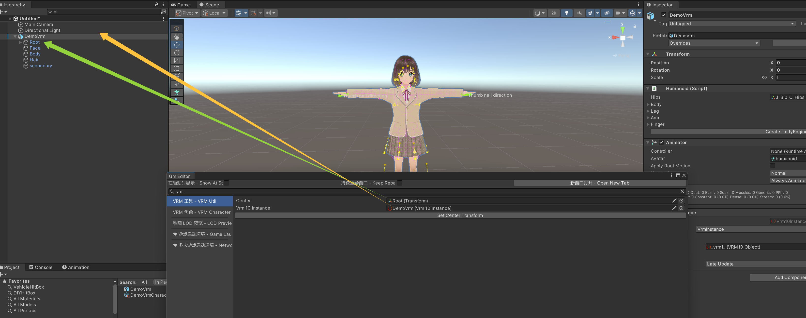
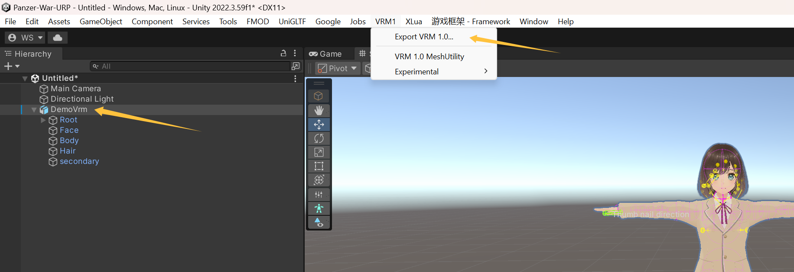
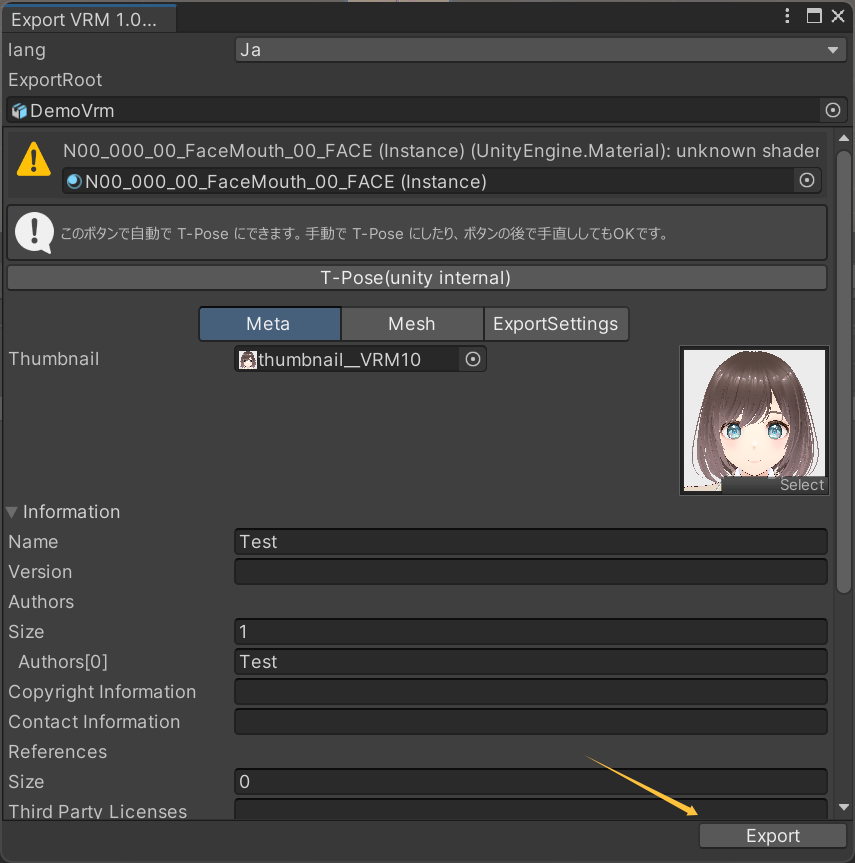
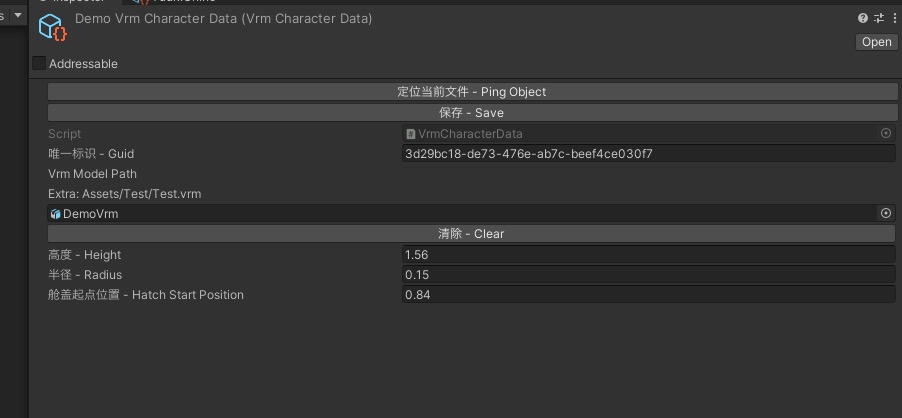

42.1. VRM 模型
VRM
Simply drag the VRM file into Unity.
将 Vrm 格式的文件拖入 Unity 即可完成导入。


Adjusted VRM bone reference points VRM 骨骼参考点修正
If the VRM model was not created by yourself, you need to correct the bone reference points; otherwise, the physics behavior will be incorrect! Ask ChatGPT
如果不是自己制作的 VRM 模型，则需要修正骨骼的参考点，否则物理表现会错误！！！

Select VRM Tool
选择 VRM 工具

Select the root node of the character in the scene, then click VRM1 / Export VRM 1.0... from the top menu bar.
选中场景中的人物的根节点，点击顶部菜单栏的 VRM1 / Export VRM 1.0 ...

Fill in the author and name, then click Export to overwrite the original VRM model.
填写作者，名称，点击导出，覆盖原本的 VRM 模型

VRM Data

Vrm Model Path: Please select a file ending with the .vrm format.
Note: Only the original VRM model will be included in the build. Any modifications made to the VRM model within Unity will not take effect!
Vrm Model Path 请选择 vrm 格式结尾的文件，
注意：打包时候，只会打包原始的 VRM 模型，在 Unity 对 VRM 模型进行任何的修改，不会生效！
In CrewData,fill-in the vrm guid
在 CrewData 中，关联 Vrm 的 Guid